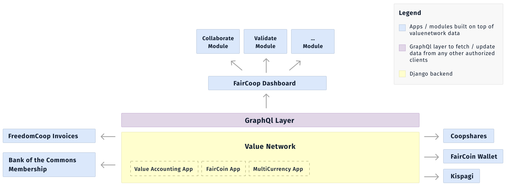

Descriptions
In the diagram, the rectangles inside the yellow ValueNetwork box are django apps within one django project. Mostly this reflects the Value Accounting app.
The Work App was created when NRP was forked to become OCP. It has some of the original NRP pages copied there, and improved, plus new features of integration with FairCoin, membership processes, etc. The Value Accounting App is the original NRP with a few upgrades, and being used as the "admin app" for admin people and when a function has not yet been moved to the work app.